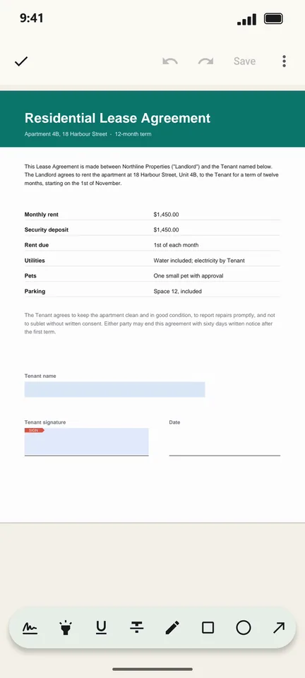
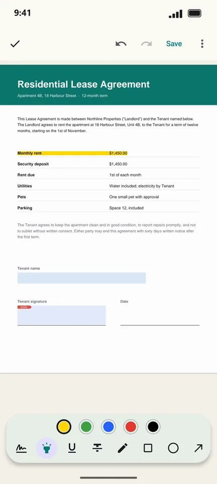
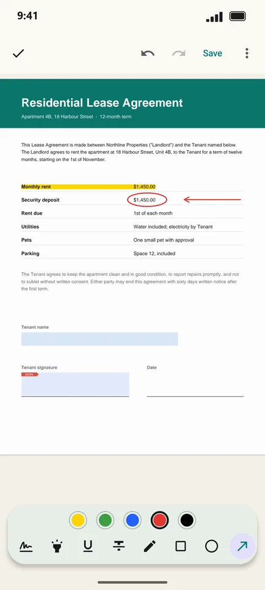

How to highlight and mark up a PDF on Android
Reviewing a contract or studying notes? PageCat lets you highlight, underline and strike out text, draw circles, boxes and arrows, and add sticky notes, then save them into the PDF so others see them too.
Steps
Open the PDF and tap the pen icon (Annotate & fill).

Choose Highlight and drag across the text.

Pick Oval, Rectangle or Arrow, choose a colour, and drag to draw.

Tap Save. Your marks are stored in the PDF as standard annotations.
Good to know
- Undo and redo are at the top. Eraser removes a single mark.
- Use Note to leave a comment that opens when tapped.
Questions
Will others see my highlights?
Yes. PageCat saves standard PDF annotations, which other PDF apps show too.